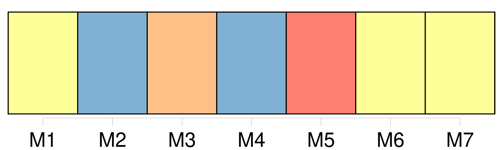
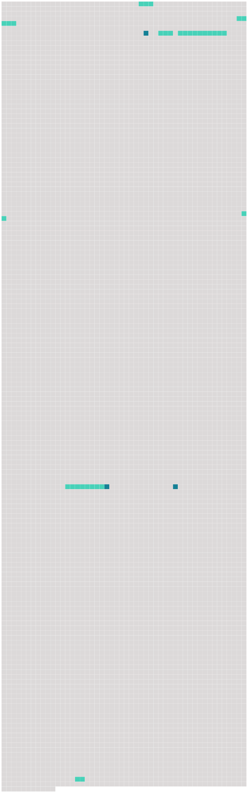

Longueur nb maillons : 10 mentions |
 |
Au-dessus de la cheminée de forme antique, un massacre de cerf dix cors épanouissait son bois, et le long des murailles grimaçaient sur les toiles rembrunies [des portraits enfumés] représentant des capitaines cuirassés ayant leur casque à côté d'eux ou tenu par un page, et fixant sur vous des yeux profondément noirs seuls vivants dans leurs figures mortes ; des seigneurs en simarre de velours, la tête posée sur des rotondes roides d'empois comme des chefs de saint Jean-Baptiste sur des plats d'argent ; des douairières en costume à la vieille mode, effrayantes de lividité et prenant par la décomposition des couleurs, des apparences de stryges, de lamies et d'empouses. [2 phrases] Toutes portaient à leur angle le blason de la famille et l'âge du personnage représenté ; mais, que le chiffre fût bas ou élevé, il n'existait pas une différence bien appréciable entre [ces têtes aux lumières jaunes] , aux ombres carbonisées, enfumées de vernis et saupoudrées de poussière ; deux ou trois de ces toiles chancies et couvertes d'une fleur de moisissure présentaient des tons de cadavre en décomposition, et prouvaient, de la part du dernier descendant de ces hommes de race et d'épée, une indifférence complète à l'endroit des effigies de ses nobles aïeux. [2 phrases] Tels qu' [ils] étaient, [ces fantômes peints] étaient [des hôtes bien appropriés à la solitude désolée du logis] [42 phrases]
Ce chat tout seul, dans cette cuisine, semblait faire la soupe pour lui -même, et c'était sans doute lui qui avait disposé sur la table de chêne une assiette à bouquets verts et rouges, un gobelet d'étain, fourbi sans doute avec ses griffes tant il était rayé, et un pot de grès sur les flancs duquel se dessinaient grossièrement, en traits bleus, les armoiries du porche, de la clef de voûte et [des portraits] [63 phrases]
Pierre, se baissant au foyer, alluma un éclat de bois de pin enduit de résine, sorte de chandelle économique qu'emploient les pauvres paysans, et se mit à précéder le jeune seigneur ; Miraut et Béelzébuth se joignirent au cortège : la lueur fumeuse de la torche faisait vaciller sur les murailles de l'escalier les fresques pâlies et donnait une apparence de vie [aux portraits enfumés de la salle à manger] [dont] les yeux noirs et fixes semblaient lancer un regard de pitié douloureuse sur [leur] descendant. [84 phrases]
De faibles rougeurs coloraient les joues pâles [des portraits] , et si les douairières vertueuses, engoncées dans leurs collerettes et roides sous leur vertugadin, prenaient un air pincé à l'aspect des jeunes comédiennes folâtrant dans ce grave manoir, en revanche, les guerriers et les chevaliers de Malte semblaient leur sourire du fond de leur cadre et se trouver heureux d'assister à pareille fête, à l'exception de deux ou trois vieilles moustaches grises boudant obstinément sous leur vernis jaune, et gardant, malgré tout, les mines rébarbatives dont le peintre les avait dotées. |
 |
Il est possible de télécharger la ressource sur la page Ortolang |
Si vous avez des questions ou vous voyez des erreurs, merci d'envoyer un mail à silvia.federzoni89@gmail.com |